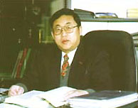

[学术委员会主任] 柴天佑 中国工程院院士

柴天佑，中国工程院院士，IEEE Fellow，IFAC Fellow。1985年于东北大学获工学博士，并留校任教。1988年被晋升为教授，1990年为博士生导师。东北大学自动化研究中心主任。国家重点基础研究发展计划（973计划）项目首席科学家。曾任国际自动控制联合会（IFAC）技术局成员及IFAC制造与仪表技术协调委员会主席(1996-1999)。
柴天佑教授长期以来从事智能解耦控制、自适应控制、过程工业综合自动化等领域的应用基础和工程技术的研究，先后主持与完成国家973重点基础研究计划、国家自然科学重点基金、863高技术计划、国家攻关计划、国家高技术产业化专项以及企业重大自动化工程等30多项科研项目，取得多项系统性创新成果。提出了多变量自适应解耦控制理论与方法，与智能控制、计算机集散控制技术相结合，主持研制出智能解耦控制技术及系统；提出了以综合生产指标为目标的全流程混合智能优化控制方法，主持研制了混合智能优化控制技术及综合自动化系统，并成功应用于钢铁、选矿、有色、电力等行业，取得了显著的社会经济效益。
获国家科技进步二等奖三项，省部级特等奖、一等奖十项； 2007年获IEEE系统控制协会颁发的控制研究杰出工业成就奖，2002年获何梁何利基金科学与技术进步奖，2003年获辽宁省科技功勋奖。发表论文被SCI收录80余篇，EI收录200余篇，ISTP收录80余篇。出版专著2部。应邀在IFAC、IEEE的国际会议上作大会特邀报告20余次。
创建了东北大学自动化研究中心，并使之成为国家工程技术研究中心。培养建设了一支年轻的研究队伍，共有10余名博士后出站，70余名博士生获得博士学位，200余名硕士生获得硕士学位。获得全国五一劳动奖章及全国先进工作者荣誉称号。